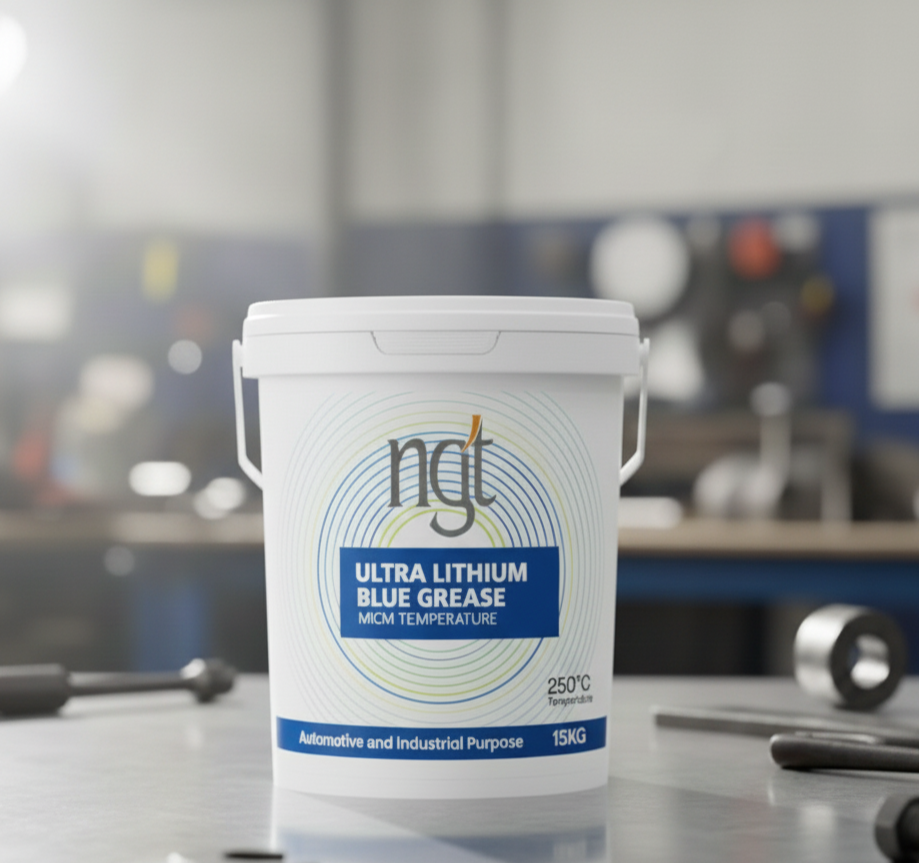

NGT ULTRA LITHIUM BLUE GREASE is a next-generation, high-performance lithium-based grease engineered for superior lubrication and protection under extreme conditions. With its advanced additive technology, it offers unmatched durability, corrosion resistance, and stability — even in high-load, high-temperature, and wet environments.
This ultra-grade formulation ensures long-lasting lubrication and performance consistency for a wide range of industrial and automotive applications.
Key Features & Benefits:
Built for Performance – NGT ULTRA LITHIUM BLUE GREASE guarantees dependable performance and protection where others fail, keeping your machinery running smoothly in every condition.